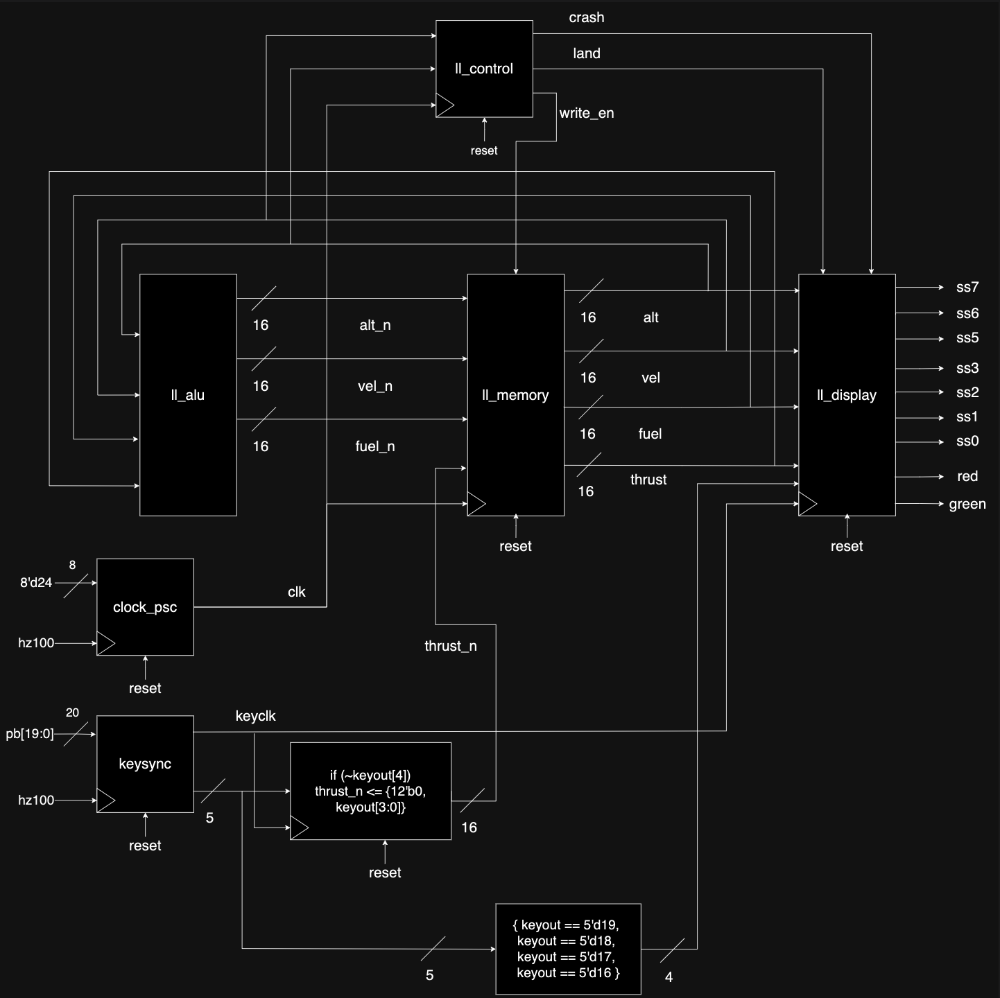

Developed and integrated SystemVerilog program onto the ICE40HX-8K FPGA that accepts real-time engine thrust adjustments to achieve a safe landing in simulation settings. Functionality includes dynamic LED indicators of lunar lander's condition and ability to toggle between different displays of aerospace relevant values.